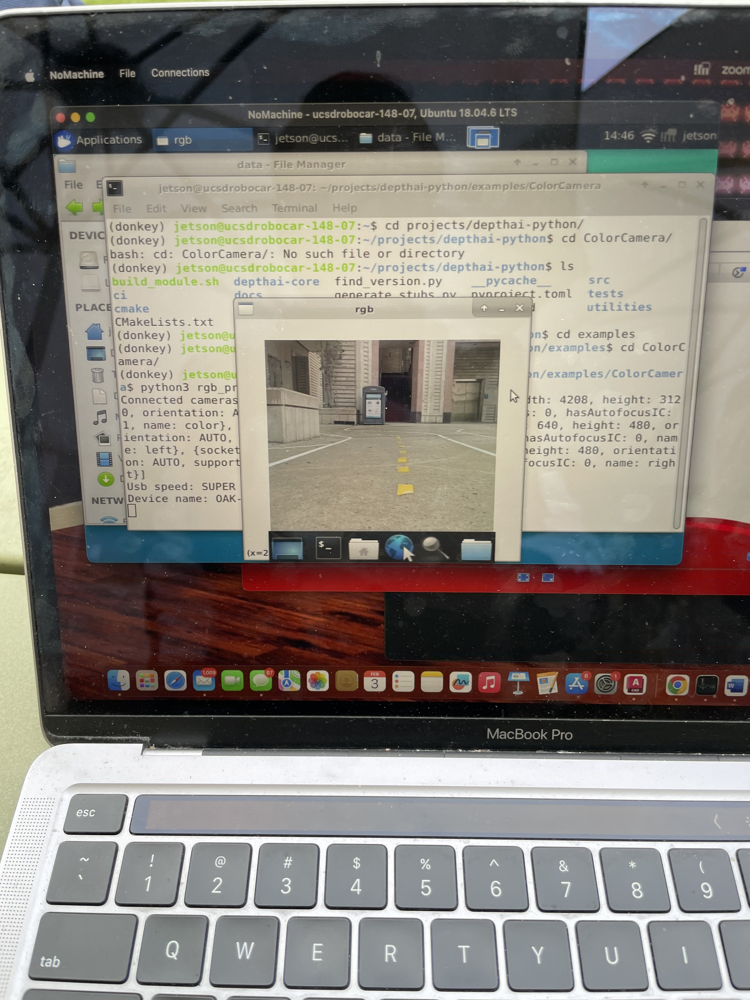

Autonomous Car Development

As part of UC San Diego's MAE 148 course on autonomous vehicles, our team designed and built a 1/8-scale self-driving car platform. The vehicle used a combination of LIDAR, stereo depth camera, and odometry sensors to navigate a closed racetrack in full autonomy. One of the highlights of this project was implementing a SLAM (Simultaneous Localization and Mapping) system using ROS2 to build a map of the environment and estimate the car's position in real-time. This allowed our vehicle to localize itself on the map and plan trajectories accordingly.
Project Highlights
- Implemented ROS2-based SLAM system for real-time mapping and localization using LIDAR and wheel encoders.
- Used an OAK-D depth camera for lane detection and visual feedback in outdoor environments.
- Ran all computation on an NVIDIA Jetson Nano running Ubuntu 18.04 with NoMachine remote access.
- Developed motion planning and PID-based control for accurate path following.
- Performed successful autonomous navigation completing multiple laps around the track.